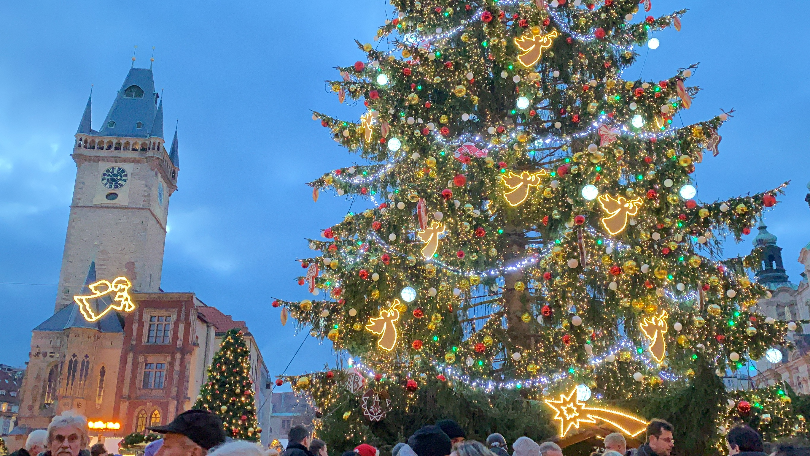

여행 로그
프라하의 크리스마스
2022.12.12
유럽의 크리스마스
유럽 여행을 계획할 당시, 가장 중요하게 여겼던 일정은 크리스마스에 유럽의 크리스마스를 온전히 즐기는 일이었다. 크리스마스 마켓 문화가 발달해 있는만큼 그 현장을 생생하게 즐기고 싶었다.
프라하의 크리스마스 마켓
많은 관광지 중 내가 선택했던 크리스마스 마켓은 바로 프라하에서 열리는 마켓이었다. 프라하
구시가지 광장에 세워진다는 엄청나게 큰 트리가 큰 기대감을 심어주었다.

이 트리가 바로 프라하 구시가지 광장에 있던 트리인데 살면서 봤던 트리 중에 가장 웅장하고
아름다웠다.
 광장에는 아기자기한 소품과 따뜻한 음료, 간식거리들을 팔고 있는 작은 상점들이 즐비해있었다.
날씨는 많이 추웠지만, 구경할 거리도 많았고 간단하게 먹기 좋은 음식들도 많아 크리스마스
기분내기 정말 좋은 공간이었다.
광장에는 아기자기한 소품과 따뜻한 음료, 간식거리들을 팔고 있는 작은 상점들이 즐비해있었다.
날씨는 많이 추웠지만, 구경할 거리도 많았고 간단하게 먹기 좋은 음식들도 많아 크리스마스
기분내기 정말 좋은 공간이었다.